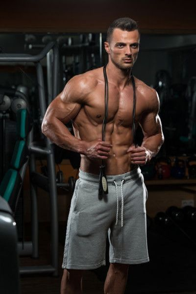
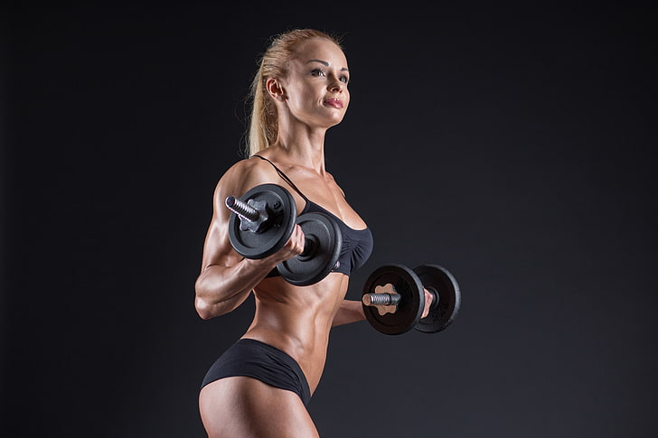

Edzés típusai
Testépítés

A testépítés célja, hogy különféle gyakorlatok, főképp súlyzós edzés segítségével növelje az izomzatot, valamint hogy népszerűsítse az egészséges életmódot és a fitneszt. Versenysportként a testépítés az izomtömeg definiáltságát, szimmetriáját, esztétikáját hivatott bemutatni művészi módon. Az edzésekhez többek között kézisúlyzókat, súlytárcsákat, különféle rudakat és egyéb ellenállásos eszközöket, gépeket használnak. A testépítésben is fontos szerepet kap az étrend, a regenerálódásra szánt pihenőidő, a gyakorlatok szabályos végzése, valamint a kiegészítő mozgásformák, mint az aerob edzés.A legtöbb testépítő táplálékkiegészítőket is fogyaszt, például fehérjeport. A testépítők egy része használ anabolikus szteroidokat az izomépítés és a teljesítmény fokozásához, aminek azonban egészségkárosító mellékhatásai lehetnek.
Kardiózás
A kardió mozgásnak ugyanis nem csak a testre, de a lélekre és az elmére is igen kedvező hatásai vannak, amik sok esetben még a zsírégetésnél is fontosabbak. A kardió edzést sokan leginkább zsírégető mozgásformaként emlegetik: és valóban, a legtöbben azért is végzik ezeket a gyakorlatokat, hogy csökkentsék testsúlyukat. A kardiótól nem lesz olyan nagy mennyiségű izmunk, viszont a kis mennyiségű izom is nagyon fog látszani. A kardió nem egy olyan edzésfajta ahol nagysúlyokkal dolgoznak, itt inkább a saját testünket használjuk súlyzóként.
Női testépítés
A női testépítés a kezdetektől fogva vegyes fogadtatásban részesült. A nőktől általában azt várja el a társadalom, hogy a „nőiesség” berögzült, elfogadott normáinak feleljenek meg, így a testük formálását is a nőiességük részének tekintik. Amikor a nők eltérnek a nemüktől elvárt szereptől, a társadalom szemében elkezdik elveszteni a nőiességüket. A testépítőnőket gyakran kritizálják a testük miatt, mivel olyan izomzatot építenek, amelyet hagyományosan a férfiassággal azonosít a társadalom. A női testépítők más téren is hátrányt szenvednek, a helyezettek rendszerint jóval kisebb díjazásban részesülnek a versenyeken, mint férfi társaik